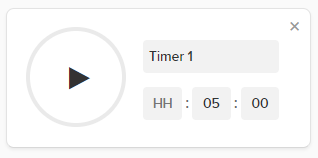

I often find myself setting timers using Google's "set timer" search keyword. So often infact, that I decided to make a bookmarklet to simplify this action.
If you're not familiar, this is what Google's timer looks like:
I originally put this together in 2015. As of 2022 it looks like Google has retired the 'timer' search feature. Luckily DuckDuckGo offers the same functionality so I have updated the bookmarklet to use that instead.
Simply drag this bookmarklet to your Bookmarks toolbar:
Set a timerconst timer_input = prompt('For how long?');
open(`https://duckduckgo.com/?q=timer+for+${timer_input.split(' ')[0]}+${timer_input.split(' ')[1] || 'minutes'}`, '_blank');Have any issues? let me know on the GitHub repository!